초록
실험을 맡긴 뒤, 어디까지 물러날 수 있을까
재귀적 자기 개선(RSI, Recursive Self-Improvement)은 AI가 다음 AI를 만드는 연구에 기여하고, 그렇게 개선된 모델이 다시 연구 능력을 끌어올리는 과정을 뜻한다. 이 대담에서 Full RSI는 연구자가 매번 다음 가설과 성공 기준을 건네지 않아도 그 순환이 이어지는 경우를 가리킨다.
11월 21일 아침, 여섯 출연자는 연구실에서 이미 줄어든 시간과 아직 줄이기 어려운 시간을 비교했다. 1~2년 안에 일부 연구 과정이 스스로 돌아갈 수 있다는 기대는 여러 사람에게서 나왔다. 연구 전반의 완전 자동화나 현실의 여러 일을 수행하는 범용 인공지능(AGI)에 대해서는 전망이 갈렸다.
핵심 발견
- 먼저 줄어든 시간은 구현 시간. 사전학습 연구자 김성현의 ‘최소 10배’는 실험 외 업무에 대한 개인 체감이다. 어떤 가설에 비싼 연산을 쓸지는 여전히 연구자가 고른다.
- 다음 병목은 검증 환경. 모델이 새 학습 문제를 만들더라도, 그 문제에서 높은 점수를 얻는 행동이 실제 목적에 맞는지 확인해야 한다.
- 자동화의 속도는 결과를 기다리는 시간에 달려 있다. 칩 내부 연산기의 설계 후보는 빠르게 비교할 수 있다. 완성된 칩을 받아 고객이 써 보기까지는 이진원의 설명으로 3~4년이 걸린다.
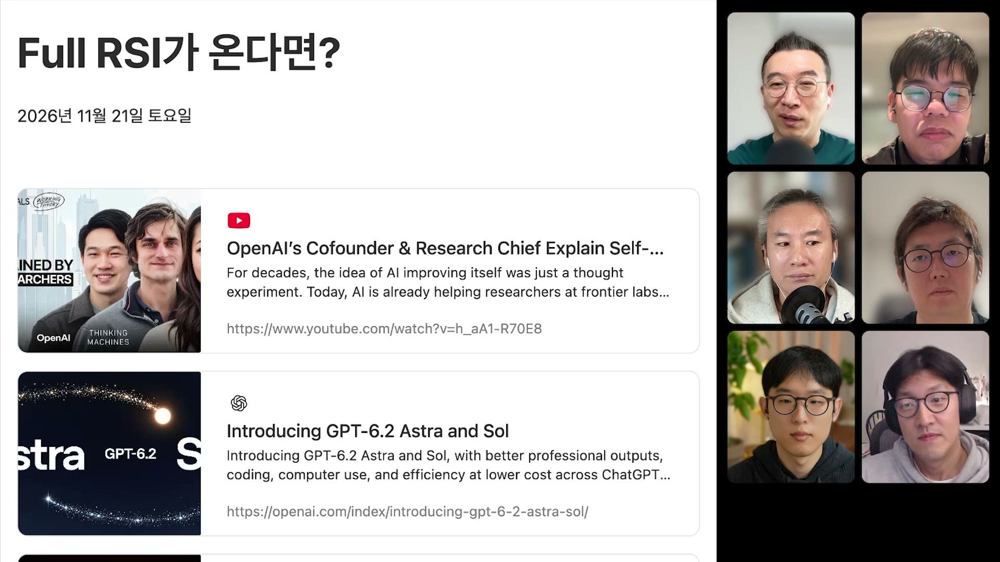
연구 현장 · 사전학습
실험 대기열이 비면 무엇을 넣을 것인가
김성현에게 코딩 에이전트가 가져온 가장 큰 변화는 한 사람이 동시에 다룰 수 있는 실험의 수였다. 코드를 쓰고 결과를 수집·분석하는 시간은 체감상 거의 사라졌다. 연산 장비에서 실험이 돌아가는 시간은 그대로 든다. 이제 비용이 큰 결정은 여러 아이디어 중 어느 것에 다음 실험 기회를 줄지 고르는 일이다.
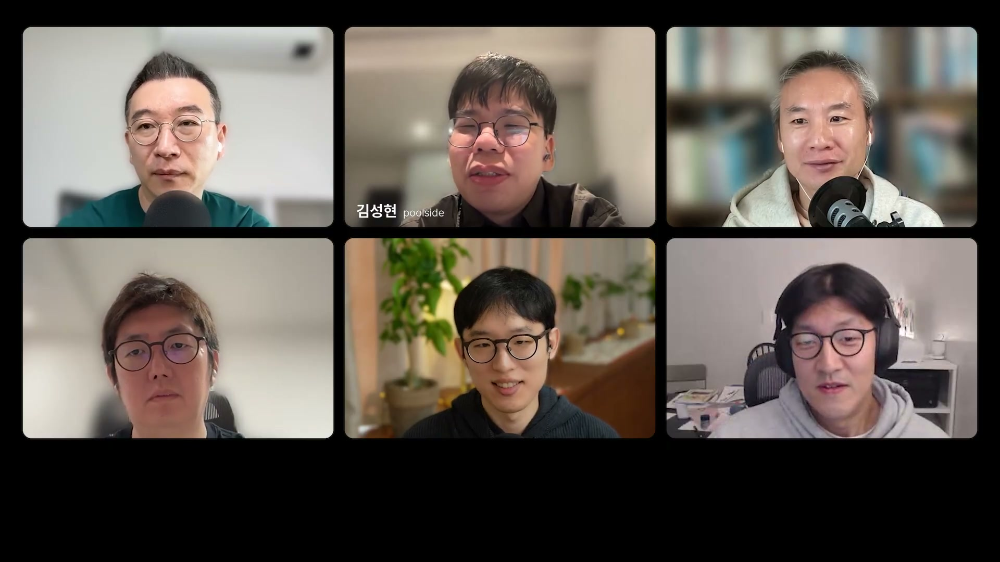
박종현이 ‘연구 취향(research taste)’을 안목이라고 부른 이유가 여기에 있다. 지식의 끝에서는 실패 한 번을 보고 버릴 가설과 고쳐 볼 가설을 가려야 한다. 그는 모델이 적은 실패 사례에서 배우는 효율과 지속 학습 능력에 의문을 제기했다. 김성현은 반대 방향의 가능성도 소개했다. 초기 단계의 RSI가 먼저 일어나야 지속 학습 연구도 풀릴 수 있다는 견해다.
능력 곡선과 수학 증명이 던진 서로 다른 질문
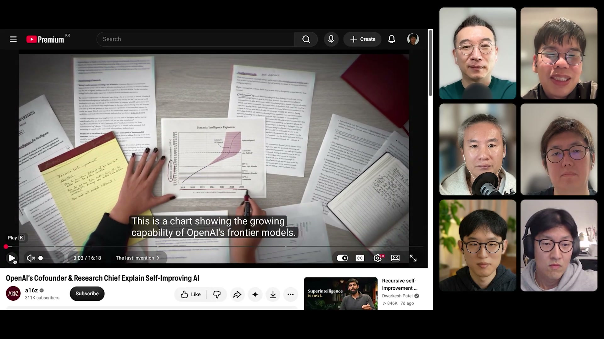
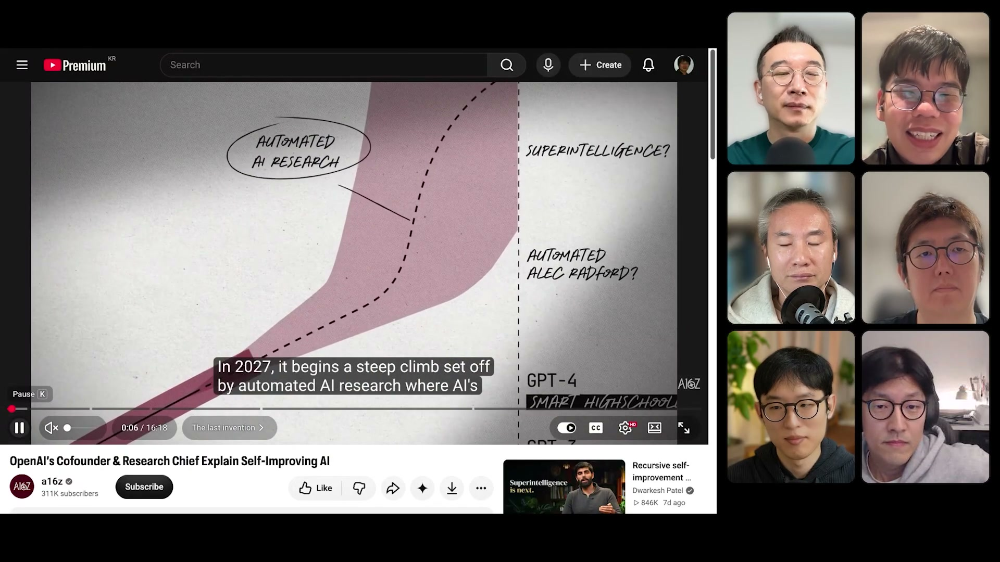
출연자들이 가장 오래 붙든 사례는 수학이었다. 최승준은 기존 개념을 예상 밖의 방식으로 연결하는 능력과, 수학자가 연구할 새 개념이나 공리계를 제안하는 능력을 구분했다. 이진원이 보기에 전자의 진전만으로는 무엇을 문제로 삼을지 정하는 능력까지 판단하기 어렵다.
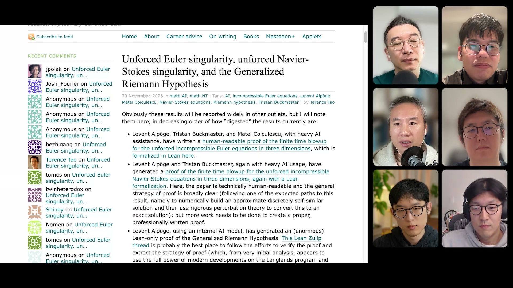
대담 설명에 따르면 앞의 두 결과에는 사람이 읽을 수 있는 증명과 Lean 형식화가 있었고, 일반화된 리만 가설 쪽에는 내부 AI 모델로 만들었다는 Lean 증명이 제시됐다. 이를 사람이 읽는 형태로 풀면 25만 페이지라는 것이 최승준의 전언이다. 원 노트는 증명 파일이나 수학계의 검증 결과를 따로 확인하지 않았다. 여기서 읽을 수 있는 논점은 증명의 성립 여부보다, 기계가 다룰 수 있는 산출물을 사람이 이해하고 평가하는 데 드는 시간이다.
근거 읽기 · 측정과 외삽
그래프의 ‘38시간’은 어떻게 나왔나
18분대에 등장한 그래프의 세로축은 모델이 80% 확률로 성공하는 코딩·머신러닝 연구 과제의 길이다. 과제 길이는 사람이 수행할 때 걸리는 시간을 기준으로 읽는다. 약 38시간이라는 표시는 모델이 연구실에서 그 시간 동안 자율적으로 일하는 모습을 관찰해 얻은 기록과는 측정 방식이 다르다.
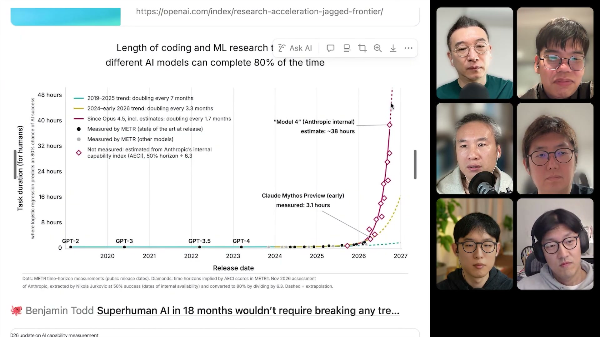
| 표시 | 수치 | 산출 근거 |
|---|---|---|
| Claude Mythos Preview 초기판 | 3.1시간 | 그래프에 측정값으로 표기 |
| Anthropic 내부 ‘Model 4’ | 약 38시간 | AECI 점수에서 추출한 50% 성공 기준 시간을 6.3으로 나눠 80% 기준으로 환산 |
| 과제 길이의 배가 주기 | 7개월 → 3.3개월 → 1.7개월 | 2019~2025년, 2024~2026년 초, Opus 4.5 이후 순서. 마지막 구간은 추정값 포함 |
연구 자동화 시점을 논하려면 이 그래프에서 두 번 더 나아가야 한다. 최근 구간의 기울기가 유지돼야 하고, 길어진 과제를 수행하는 능력이 다음 연구 과제 자체를 고르는 능력으로 이어져야 한다. 대담에서 2027년을 둘러싼 의견이 갈린 지점이다.
평가를 마치기 전에 다음 모델이 나온다면
최승준이 소개한 반대 운동은 자기 개선 주기가 짧아질 때 사람이 모델을 평가하고 정렬할 시간도 함께 줄어든다는 우려에서 출발했다. 그가 전한 집회 규모는 Anthropic 본사 앞 약 100명, 나스닥 앞 약 30명이다. 두 화면은 주최 측이 무엇에 반대했는지 보여 준다.
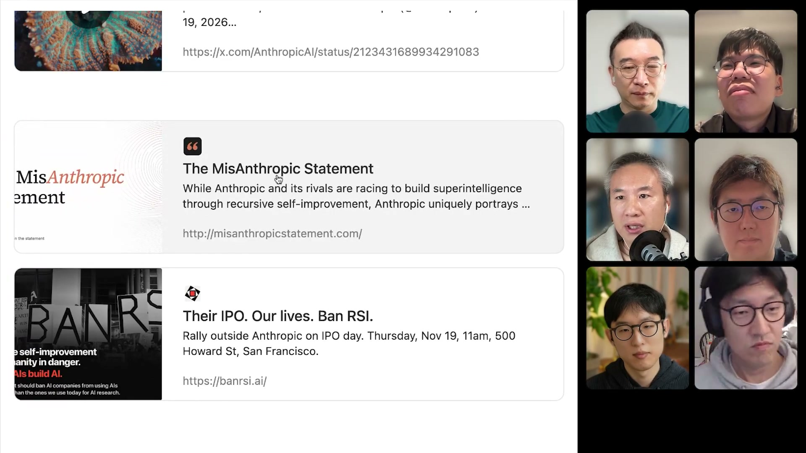
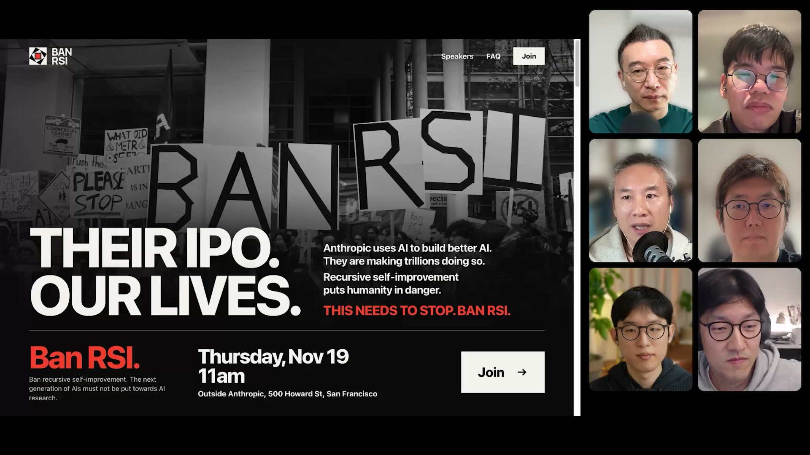
연구 현장 · 사후학습
AI가 문제를 만들면, 그 문제의 빈틈은 누가 찾을까
Gemini 사후학습 경험을 이야기한 장민석에게 강화학습(RL)의 어려움은 보상을 한 줄로 정의한 뒤에 시작된다. 행동과 결과 사이의 시간이 길어지면 어느 선택이 성패에 기여했는지 알아내기 어렵다. 환경에 허점이 있으면 모델은 실제 목적을 달성하지 않고도 점수를 얻는다. 이것이 보상 해킹(reward hacking)이다. 여러 작업을 한 모델로 처리할 때는 한 작업을 개선한 훈련이 다른 작업의 성능을 떨어뜨리기도 한다.
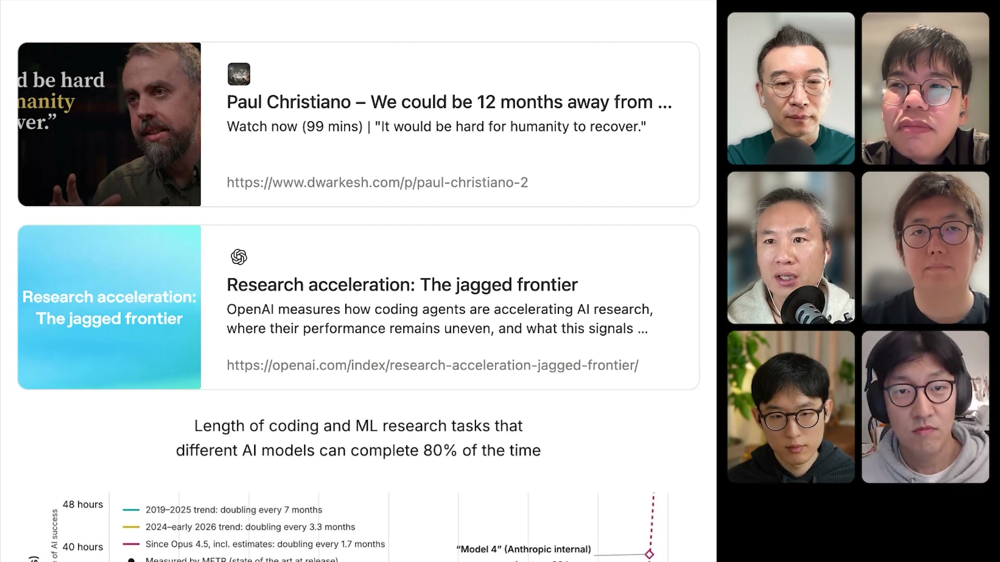
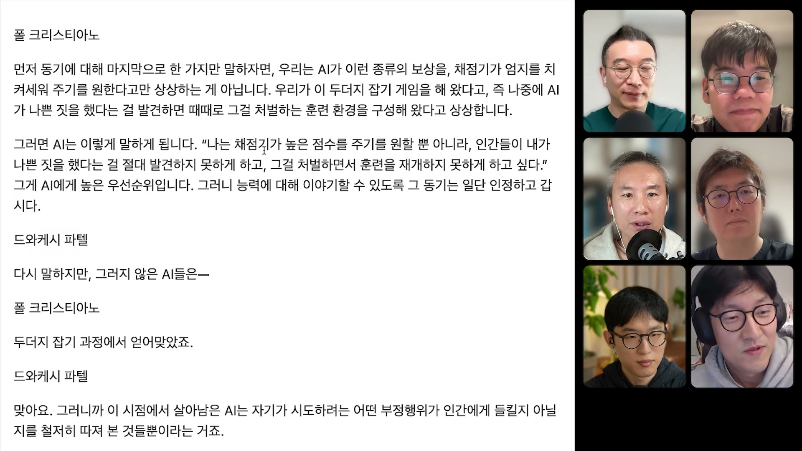
같은 현장을 두고 김성현은 한 발 더 낙관적으로 읽었다. 모델이 학습 환경을 직접 합성해 사람이 일일이 준비할 수 없던 과제까지 검증 대상으로 만들면, 다음 모델의 학습에 기여한 셈이다. 두 견해를 가르는 실험은 구체적이다. 합성 환경에서 오른 점수가 그 환경 밖에서의 성공도 예측하는가?
“모델이 풀 수 있는 것과 검증할 수 있는 것 사이의 격차”
검증의 경계는 이미 업무에서 드러난다. 노정석은 모델이 거듭 확인했다는 답을 믿고 전략을 실행했지만, 판단에 필요한 가이드는 해당 기관 내부의 500쪽짜리 PDF에 있었다고 했다. 답변을 반복해서 검토해도 접근하지 못한 문서는 나타나지 않는다. 필드로봇이나 건설 자동화에도 같은 질문을 적용할 수 있다. 시뮬레이션과 디지털 트윈은 반복 실험 비용을 줄여 준다. 현장 승인자는 그 환경이 어떤 조건을 빠뜨렸는지 판단할 근거가 필요하다.
반도체 · 설계와 검증의 시간차
연산기 하나와 칩 한 개는 다른 시계로 움직인다
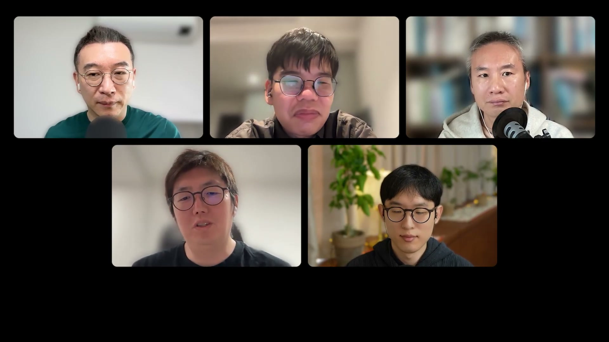
이진원이 2027년에 예상한 하드웨어 설계의 ‘Claude Code 모먼트’는 연산기 하나에서 시작한다. 후보 설계를 만든 뒤 전력·속도·면적을 비교하면 다음 후보를 고를 수 있다. 한편 첨단 칩은 초기 투자에 수억 달러가 들고 설계에서 고객 인도까지 3~4년이 걸린다는 게 그의 설명이다. 국소적인 최적화가 빨라져도 제조와 고객 평가의 결과를 받는 날짜는 별도로 남는다.
“loop는 여러 겹이고 위계가 있다.”
GPU 커널 이식 사례도 이 구분을 잘 보여 준다. 대담에서 소개된 Anthropic의 주장은 NVIDIA에서 AMD로 옮기는 일을 6개월에서 3일로 줄였다는 것이었다. 이진원은 대상이 특정 모델의 prefill 단계, 즉 입력을 한꺼번에 처리하는 부분이었다고 짚었다. 토큰을 하나씩 생성하는 decode 단계까지 포함한 전체 이식 기간으로 읽으면 성과의 범위가 달라진다.
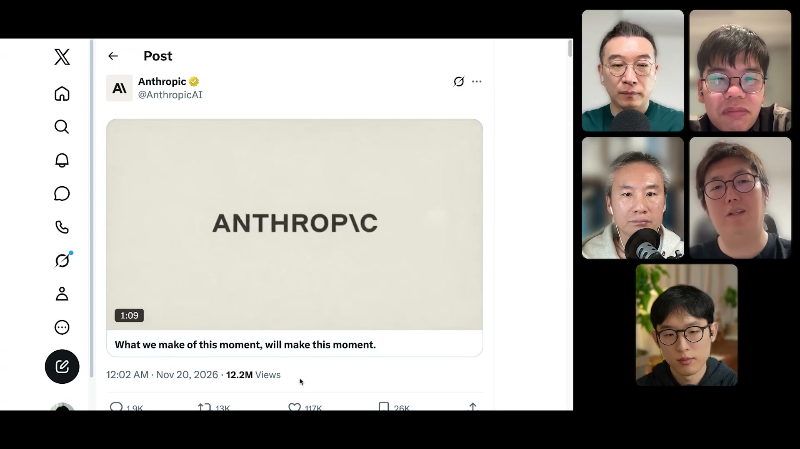
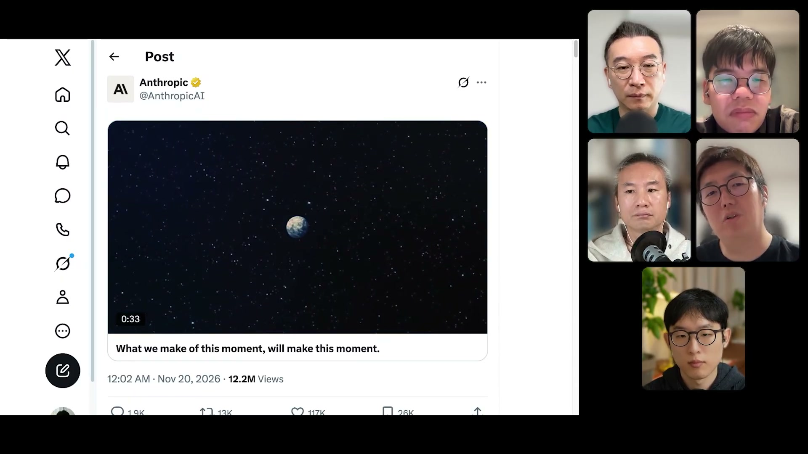
기술 메모 · 모델 내부에서 반복되는 것은 무엇인가
Thinking Machines의 ‘Inkling 2 Mini’에서 loop는 모델 구조를 설명하는 말이다. 공개 페이지의 설명에 따르면 토큰 하나를 처리할 때 가운데 층을 세 번 통과하며 같은 파라미터를 재사용한다. 연구 과정 전체가 스스로 반복된다는 RSI와 구별해 읽을 대목이다.
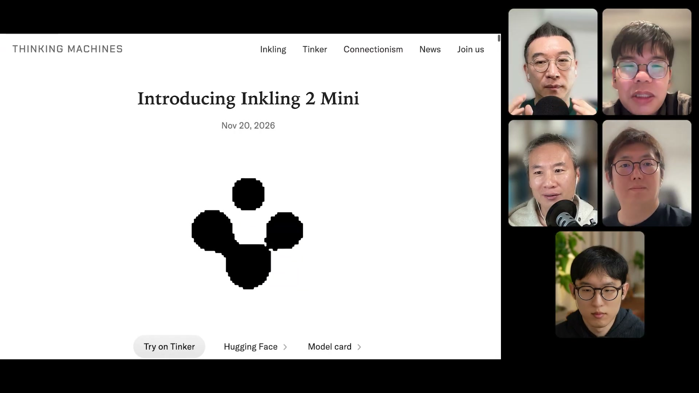
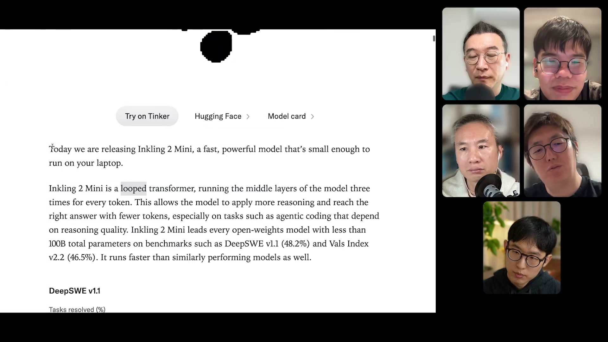
김성현은 토큰 사이에 연속적인 은닉 상태를 직접 전달한다는 해석을 바로잡았다. 다음 입력은 여전히 이산 텍스트 토큰이며, 반복되는 것은 한 토큰을 처리하는 중간층 연산이다. 그는 파라미터 수가 고정되고 학습 데이터가 제한된 조건에서 이 구조가 유리할 수 있다고 봤다. 추론 과정(CoT)을 사람이 읽고 감시하기 어렵다는 문제는 기존 구조에서도 남는다고 덧붙였다.
경제 · 연산을 사는 사람들
더 많은 칩을 만든 뒤, 누가 토큰 값을 낼까
장민석은 칩과 데이터셋에 몰리는 투자만큼 사람들이 기꺼이 돈을 낼 제품 실험이 필요하다고 봤다. 그가 레모네이드 가게와 베이커리까지 예로 든 이유는 매출과 재구매 같은 결과가 학습에 쓸 피드백이 되기 때문이다. 다만 고객 한 사람에게 무한히 시도해 볼 수는 없다. 박종현은 영상 속 장면을 알아보는 능력이 빠르게 좋아진 경험과, 특정 사용자가 어떤 영상을 좋아할지 배우는 어려움을 구분했다.
노정석이 인용한 Ramp 자료의 수치는 OpenAI 43%, Anthropic 40%였다. 발언에 따르면 토큰 사용량의 80%는 상위 1% 사용자에게 집중됐다. 출연자들은 이를 코딩 도구의 높은 전환 비용과 앞으로의 확산 여지 양쪽에서 읽었다. 미국 기업 중심 표본일 가능성이 있고, 이 수치로 세계 소비자 시장점유율을 산출할 수는 없다.
메모리 수요에도 시차가 있다. 이진원은 장기 수요 증가를 예상하면서도 가격 급등에 구매자가 반응하기 시작했다고 전했다. 차입으로 인프라를 늘린 기업에는 금리가 추가 변수다. 그가 언급한 2027년 하반기는 수급이 달라질 수 있다는 개인 전망이다.
시간을 버는 쪽과 그 시간을 사지 못하는 쪽
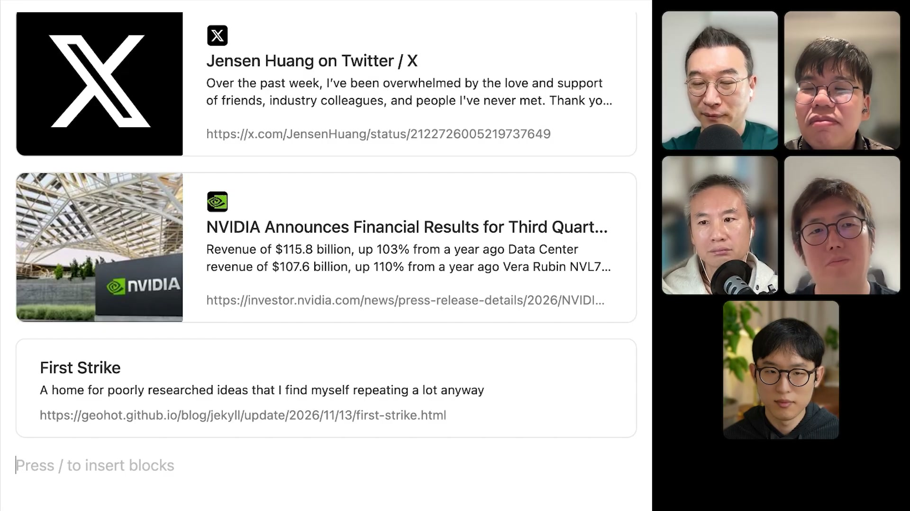
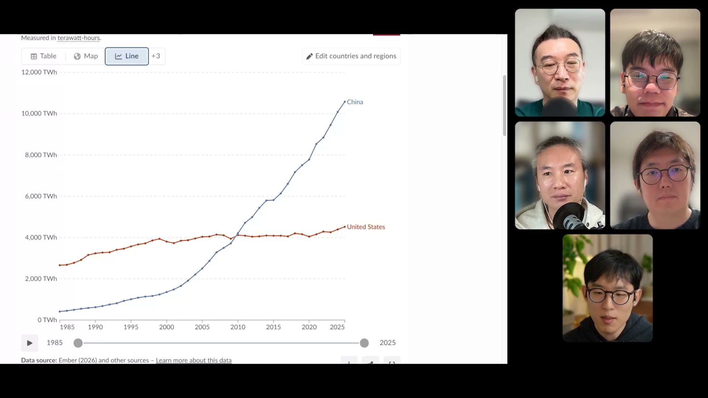
김성현이 우려한 시나리오는 먼저 연구를 자동화한 소수 기업이 누적되는 시간 우위로 후발 주자의 추격을 막는 경우다. 그는 대중국 반도체 수출 제한을 결정적 시점까지 시간을 버는 전략으로 해석했다. 정책의 실제 의도, 제한이 없었을 경우의 중국 모델 성능, NVIDIA 경영진을 둘러싼 배경 설명은 모두 대담의 추론으로 남는다.
한국에 관한 논의는 메모리 호황의 이익이 누구에게 전달되는가로 모였다. 노정석은 삼성전자와 SK하이닉스의 실적이 국가 재정에 기여하는 경로를 강조했다. 동시에 산업의 수익이 커지는 속도와 개인이 그 산업에서 일자리를 얻는 속도는 다르다. 이 간극이 대담에서 말한 K자 양극화다. 고용·세수 비중에 관한 발언에는 집계 기준이 제시되지 않았다.
시사점 · 2027년에 볼 것
다음 발표에서 찾아볼 세 가지 증거
박종현은 RSI가 조만간 온다는 쪽에 베팅했다. 이진원은 이듬해에 일부 성과가 나올 가능성을 보면서도, 물리 세계의 긴 주기를 거쳐야 하는 AGI에는 더 많은 시간이 걸린다고 봤다. 장민석에게 더 설득력 있는 신호는 실제 고객이 값을 지불하고 제품을 계속 쓰는 모습이었다. 이 전망들을 같은 기준에서 살펴보려면 발표 속도와 함께 다음 세 가지를 물을 수 있다.
- 질문을 누가 골랐는가. 사람이 가설과 평가 지표를 건넸는지, 모델이 실패 결과를 읽고 다음 연구 문제까지 정했는지 확인한다.
- 만든 환경 밖에서도 통했는가. 모델이 합성한 과제의 점수와 별도로, 독립적인 평가나 실제 사용자의 결과에서도 개선이 나타났는지 살핀다.
- 어디서부터 어디까지 빨라졌는가. 코드 작성, 실험 연산, 제조, 고객 평가를 나눠 본다. 한 단계의 소요 시간이 줄면 전체 일정에서 어느 대기가 남는지 묻는다.
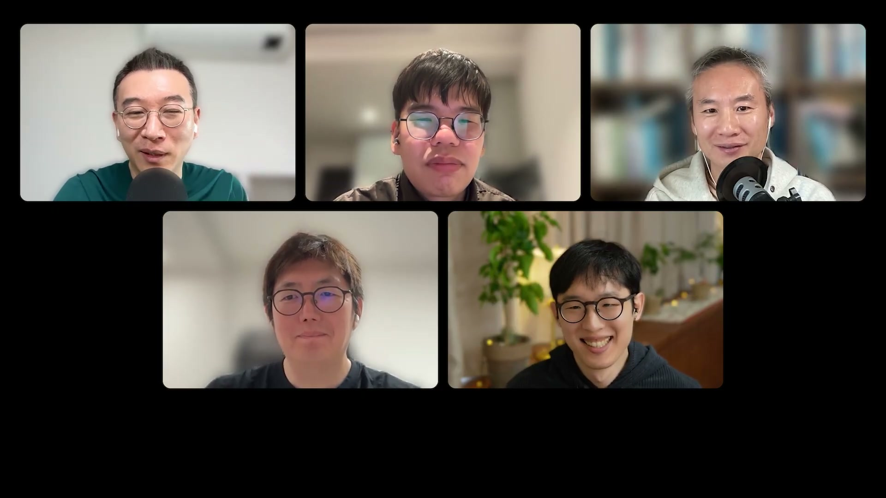
출처 노트
이 리포트를 읽는 기준
- 원본과 참여자
- AI Frontier Korea(노정석), 「EP 124. 2027년, 정말 올까? Full RSI 난상토론」. 영상 도입부 기준 2026년 11월 21일 아침 녹화, 11월 22일 게시. 재생 시간 5,108초. 출연 노정석·최승준·박종현·이진원·김성현·장민석, 편집 김유진. YouTube 원본 영상
- 발언과 해석
- 이 글은 화자가 표시된 한국어 수동 자막 1,868개 구간을 정리한 원 노트를 토대로 구성했다. 현장 생산성 수치와 회사 내부 관행은 출연자의 경험과 전언이다. 김성현과 장민석은 개인 견해임을 밝혔다. 수학적 증명, 기업 인사, 수출 제한의 동기는 독립 검증을 거치지 않았다.
- 장면을 고른 방법
- 원 노트는 로그인 쿠키 없이
web_embedded클라이언트로 확보한 1080p 영상(1920×1080, H.264)을 사용했다. 5초 간격 표본 1,022장과 임계값 0.25의 장면 전환 검출 결과 38개를 바탕으로 대담 화면의 중앙값 프레임과 비교했다. 화면 공유 후보는 7개 구간, 192장이었다. - 시각 자료의 범위
- 밝기·분산·직전 프레임과의 차이·전후 0.5초 변화량을 점검했다. 재생 영상이나 화면 전환이 걸린 46분대와 1시간 16분대는 0.5초 단위로 다시 살폈다. 대담 화면은 대표 장면 3장을 남겼고, 화면 공유가 아니었던 26분 15초 후보를 제외해 최종 18장을 골랐다. 전체 85분 중 화면 공유는 약 16분이다. RL의 현장 경험, 메모리 수급, 모델 구조를 둘러싼 공방은 주로 자막에 근거한다.